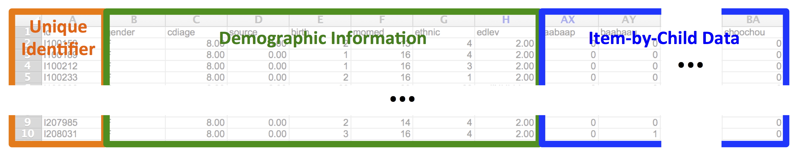
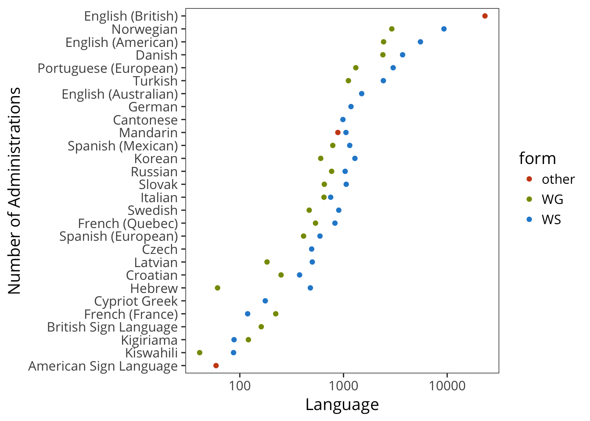
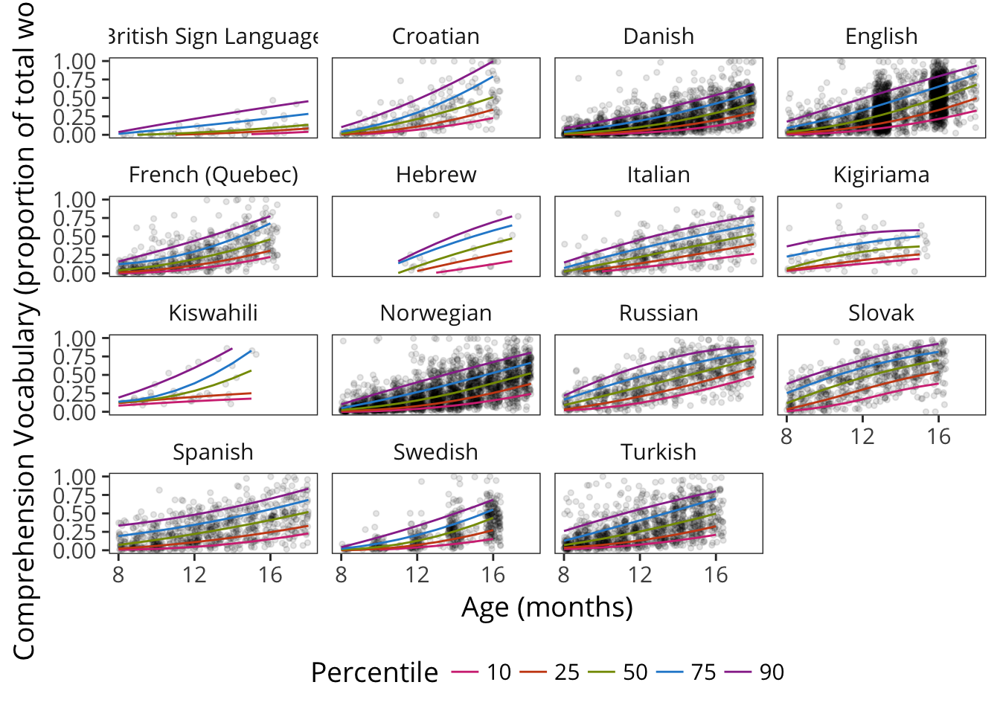
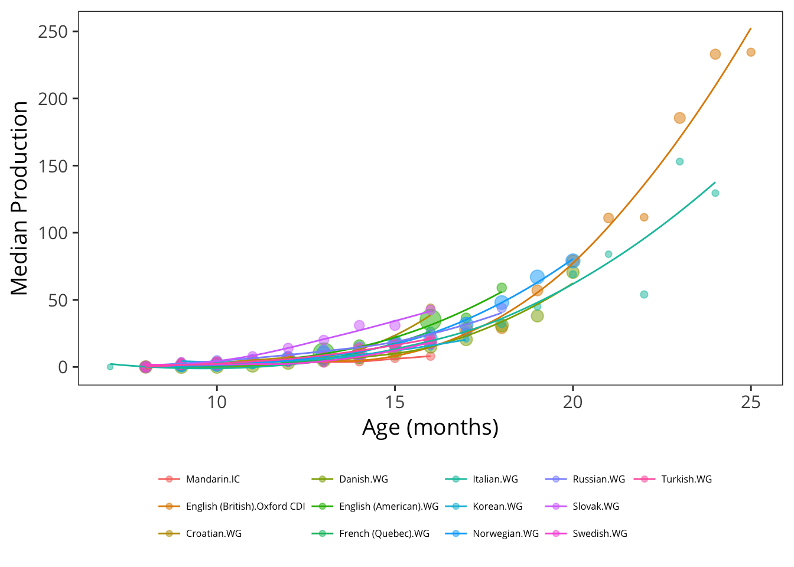
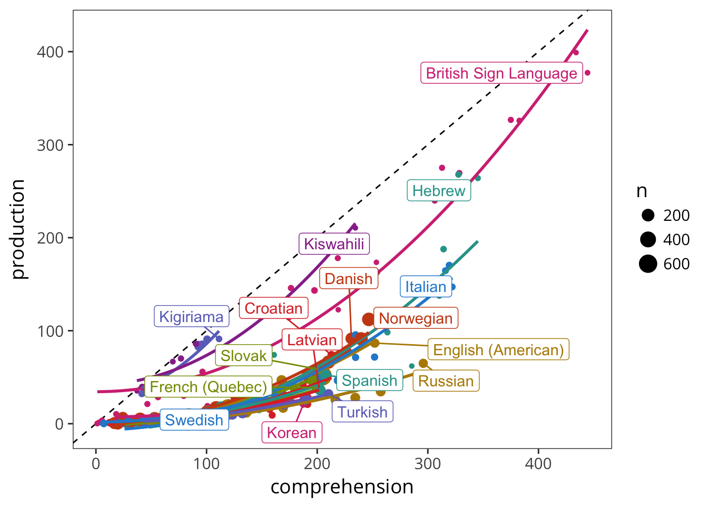
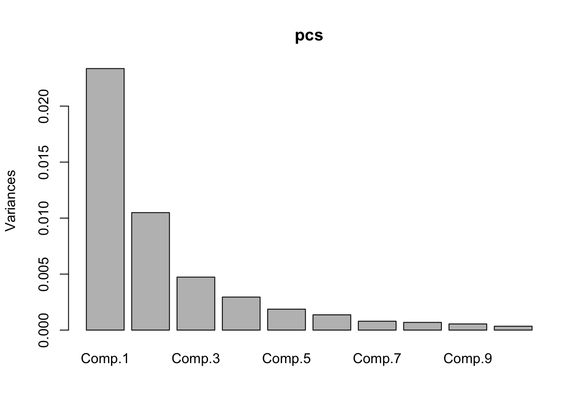

2 Methods and Data2
We begin by introducing the structure of our dataset and the database that contains it. In the second section, we give some descriptive information on the datasets included in the database.
2.1 Database
Why use a database to store vocabulary data? Consider the standard format of raw CDI data. Here is a small slice of the original CDI norming data (Fenson et al. 1994; Fenson et al. 2007). 
Each row is a child, each column gives a variable – either a demographic variable or the result of a particular word being administered to a particular child. Although this format is useful for homogeneous administrations of a single instrument, it cannot accommodate multiple instruments, multiple languages, or datasets with different sources or kinds of demographic information. Consolidating data across different instruments is very difficult in this format, and tracking data on children with multiple longitudinal administrations of a single instrument must also be done in an ad-hoc manner. The move to a database format allows far more flexible and programmatic handling of heterogeneous data structures from different sources.
Further, as information about particular entities becomes available – for example, cross-linguistic mappings of lexical items – this information can be added in a way that preserves previous analysess. In a tabular format, such functionality is not guaranteed, and changes to the structure of the dataset will necessarily break previous analyses. A database, especially when supplemented with an appropriate application programming interface (API, see below), can solve this problem elegantly.
2.1.1 Database Architecture
A relational database such as Wordbank is at its heart an ontology: a set of entities that are described in a series of tables linked by unique identifiers. The primary entities in the Wordbank database are:
- Instrument: A specific parent-report survey or questionnaire with a particular set of items. For example, the American English Words and Sentences form is an individual instrument.
- Item: A particular question on an instrument. A specific word like dog is our canonical CDI item, but other items include questions about gestures, morphological and syntactic complexity, and other aspects of early language or behavior.
- Administration: A particular instance of an instrument being given to a child, with an associated child age and source (the contributing lab).
- Child: A unique individual, with associated demographics.
- Language: A particular language or language community for which a CDI instrument has been adapted. Note that this definition of language distinguishes e.g. American and British English.
These entities are related by two primary groups of tables in Wordbank. The common tables store data that is shared between CDI instruments, including information about administrations (individual instances of a form being filled out for a child), and items (words and other questions on a form). Then the instrument tables store the item-by-item response data for particular CDI instruments. We currently include all items on CDI instruments, including questions about communication, gesture, morphology, and grammar (though in quite a few of the datasets that we archive these non-vocabulary questions have not been digitized so data on these are sparse at present; see e.g., Chapters 10 and 11).
Wordbank is designed so that it can accommodate data from a wide variety of instruments, both within and across languages. Indeed, at the time of rendering, the site includes data from more than 78787 administrations of the CDI across 28 different languages and 54 different instruments.
2.1.2 Implementation
Wordbank is constructed using free, open-source tools. The database is a standard MySQL database, managed using Python and Django.All code for wordbank is hosted in GitHub repositories, with the primary site repository containing data and database code, the r package repository containing code for the API, and the book repository containing the code and text for this manuscript.
All data uploaded to Wordbank are open and freely available for download, both through the site itself and through the GitHub repository. The site includes only de-identified data that cannot be linked to individual parents and children under US Department of Health and Human Services’ “Safe Harbor” standard. Because of these features, the Stanford Institutional Review Board has determined that the Wordbank project does not constitute human subjects research.
2.1.3 The wordbankr API
An application programming interface (API) is a set of abstractions that allow applications to interact with a resource (e.g., a set of data like Wordbank) through consistent abstractions. Although in principle it is possible to construct raw SQL queries to Wordbank, in practice all access is through an R API that constructs individual SQL calls. This API is distributed to R users through the wordbankr package, which is available through the Comprehensive R Network (CRAN).
We developed this package, wordbankr, to provide a simple and flexible API for the Wordbank dataset (Frank et al. 2016), and our current book depends on it heavily. The package provides a consistent set of function calls for retrieving data from the underlying database, for example get_instruments or get_administrations to retrieve all or subsections of these tables, respectively. We do not describe the package in depth here, since it is described in our previous paper and in its online documentation
2.1.4 “Unilemmas”: cross-linguistic conceptual mappings
As described in Chapter 1, it is sometimes useful to (cautiously) compare the developmental trajectory for a single concept across multiple languages. To facilitate these comparisons, we created “unilemmas,” cross-linguistic mappings from lexical items to single (English) forms that stand for a particular conceptual abstraction. Some lexical items are represented on only one or a handful of instruments, but there are many that are common across a large number of instruments, leading to an opportunity for cross-linguistic comparison.
Unilemmas were created for particular instruments by following a two-step procedure. First, using a pool of English unilemmas, we proposed candidate mappings for each lexical item on a form. This first step was often accomplished by a non-native speaker using translation resources and the context of the form (e.g., that an item occurs in the “animal sounds” section). Second, we recruited a linguistically-sophisticated native speaker of the language (often a psychologist or linguist), provided them with the candidate unilemma list, and asked them to review this list item by item and suggest corrections and amendments.3
Not every instrument has unilemma mappings, but they are currently available for FIXME forms in FIXME languages.
2.1.5 A note on age
Developmental psychologists are very fond of using temporal units like months and years as rough guides. Children tend to begin to crawl between 5 and 8 months, and say their first word around one year. This practice is fine for rules of thumb, but we also use these units for measurement as though they were precise (e.g., “infants with ages between 7;0 and 8;0”) when in fact such infants will vary in the number of days since their birth depending on facs like whether their seven months of life encompassed February or not. A similar problem is true of years as a scientific unit – because of leap years, years technically include 365.2524 days — though the magnitude of the imprecision is smaller.
Despite these issues, months are the currency of language development research, and we often receive contributed datasets with months as the only measure of age. In Wordbank, we define a standardized month as 365.2524 / 12 = 30.4377 days. When possible, we compute the number of days from birth to testing and then compute the number of standardized months that the child has lived. If this is not possible, we use months as reported in the dataset. We define an eight-month-old (age == 8) as a child who has lived between 8 and 9 standard months: their age is in the range [8 - 9) standard months. (The alternative definition, from 7;16 – 8;15, is sometimes used in infancy research but is in our opinion less intuitive.)
2.2 Datasets
This section gives a broad overview of the data we have available. Unlike projects in which data are collected by the organizers, in our work here, we rely on the kindness of others in contributing data that are often years or decades old. Some datasets come via an email containing well-curated tabular data; others were contributed in more idiosyncratic formats or even on paper. One dataset was even retrieved by one of us from a doorstep several hours drive away, in the form of a paper bag full of old paper forms. Thus, the amount and type of meta-data available for some datasets is limited. For example, we have limited demographic information for some datasets and only vocabulary – not complexity or gesture – items for others. In many cases we do not have full details of instructions and administration for a particular dataset. This section gives an overview of data availability and some demographic comparisons of the samples. Specifics of each dataset – to the extent that they are available – are given in Appendix A.
2.2.1 Data Provenance
As mentioned above, datasets come from a variety of sources. In all cases, the preferred citation for each dataset and its contributor is given on the Wordbank contributors page. Several of these datasets were transferred second-hand from a pre-existing database (CLEX-CDI; R. N. Jørgensen et al. 2010), while many of the others were contributed directly via electronic or paper forms. In the case of paper forms, we rekeyed the forms using double-entry methods (either ourselves or via a commercial contractor).4
Each of these datasets is then imported to the database by creating a custom import key that matches individual columns of the dataset to particular database fields (e.g., item types like words or gestures, or standardized demographic fields). These mappings are preserved along with the raw data so that they can be re-checked later.
2.2.2 Overview of the data
Wordbank currently contains data from 28 language communities. Many of these are from instruments in the original Words & Gestures (infant) / Words & Sentences (toddler) format, with around 400 items in WG and 700 in the WS. Typically, WG forms are intended for children from 8–18 months and WS forms are intended for children 16–30 months, but these ranges are flexible. Some WS forms are used up to 36 months or extended as low as 12 months (in cases where a single form is considered desirable by the researchers constructing the adaptation). The table below gives an overview of the available instruments in the dataset.
Wordbank also includes some other forms that do not fit into this schema, including short forms and vocabulary questionnaires. Some of these are “short forms” with no internal category structure and fewer items overall.
The number of administrations available is highly variable across instruments and languages, however.

2.2.3 Administration details
Data in the dataset were gathered between the beginning of the first CDI norming study in 1990 and the present, with the majority of datasets gathered within the 10–15 years prior to the writing of this book. The details of administration vary widely from dataset to dataset. Though we have different levels of knowledge regarding the exact details of administration, we know that the three most common circumstances of administration (in no particular order) are:
- On paper in a lab or other space, with instructions given in person by a researcher (e.g., Fenson et al. 1994);
- On paper, with the form sent by mail with written or telephone instructions from a researcher (e.g., the British English Twins Early Development data, which were sent home as part of a packet; ???); or
- Electronically, with instructions given either electronically or by phone (e.g., Kristoffersen et al. 2013).
We have limited direct evidence about the effects of particular administration details on the overall results. Such evidence would require random assignement of parents to administration method rather than, e.g., a comparison of administration methods across different populations in which there are obvious sample-related confounds. Nevertheless, the CDI community has amassed a substantial set of anecdotal experiences. For example, improper administration or limited instructions can result in over- or under-reporting, especially with respect to comprehension (see e.g., Feldman et al. 2000).
In one trial we conducted using electronic administration, we found that basic written instructions were misinterpreted by some proportion of parents (as evinced by an atypical number of floor and ceiling responses). This proportion appeared to decrease when we made an attempt to simplify and illustrate the instructions that we gave. Such experiences suggest – congruent with the general warnings above – that caution is warranted in interpreting absolute comparisons between different populations where there are also differences in administration style.
2.2.4 Demographics
In addition to differences in administration and form, samples from different studies also differ in myriad other ways. The most important of these, especially cultural differences between language communities, are extremely hard to quantify. But we can make a first stab at investigating some similarities and differences between the convenience samples from different studies by comparing demographics where they are available.
 Sex proportions tend to be quite close to .5, with a few exceptions for small datasets. Several WG datasets (e.g., British Sign Language, Russian, Italian, Quebec French) have more males than would be expected by chance. This pattern is important because (as we will investigate in Chapter 2.2.4), there are systematic differences in vocabulary size between boys and girls, and so sample differences in gender will lead to absolute differences in mean vocabulary size.
 Although we have maternal education data for far fewer datasets, there are also substantial differences between datasets on this variable (we will also return to this issue again in Chapter 2.2.4). Analyses of this variable are complicated by different reporting formats, so for example the German and Mexican Spanish datasets have no separate categorization for graduate education. That said, even for datasets with the most fine-grained maternal education breakdown, we see substantial differences.

Finally, when we examine birth order, we also see differences in the proportion of children who are first- vs. later-born. The majority of the German sample is first-born, while the Czech sample has many more second children, for example.
In summary, our samples differ substantially in their demographic makeup. Presumably these differences are due both to the composition of the societies being sampled as well as the sampling procedure the researchers used.
2.2.5 Longitudinal vs. cross-sectional data
 The strongest developmental inferences can be made by the examination of longitudinal data, in which children’s individual development is measured multiple times using the same instrument. Unfortunately, relatively little of our CDI data comes from this type of repeated administration. For normative datasets, pure cross-sectional data collection is used to ensure statistical independence between datapoints; for this reason much of our data are cross-sectional. Thus, we must typically settle for using the large amount of available cross-sectional data to average out individual variability. We do use the extensive Norwegian longitudinal data in Chapter 12, however.
2.2.6 Conclusions
The strength of the Wordbank framework is that it allow access to CDI data in a consistent format, such that analyses can be applied uniformly. Yet we must not allow this ease to blind us to the difficulties of comparing across measurements that are gathered using different forms, under different administration conditions, and from convenience samples in different countries and cultures using different sampling schemes. Each of these differences has the potential to complicate cross-linguistic comparisons. We will return to each throughout the book.
Some material in this chapter is adapted from Frank et al. (2016).↩
The specific direction they were given was: “We’re looking for the best English translation of these words. These are words that are among the first words that children learn, so your translation should be closest to the meaning of the word as it would be used by a young child (say, under 3 years old). For cases when there are two equally good English words, put both. If you don’t think there is a good translation into a reasonable English word that a kid might know, you can leave the alternative translation blank.”↩
In a check for errors in the rekeying of one Korean dataset, we found that there were 4 incorrect fields in 10 full records for an error rate of ~0.06%.↩